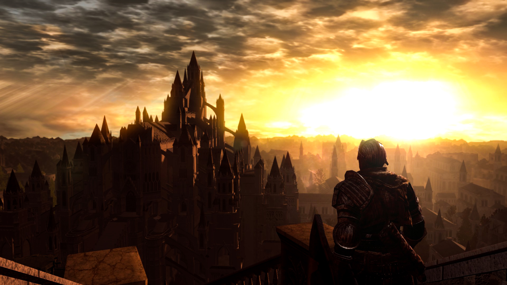
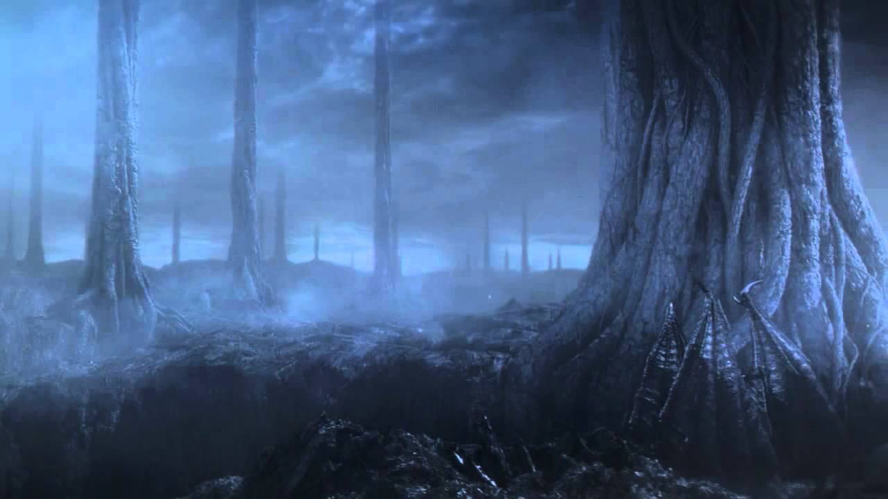
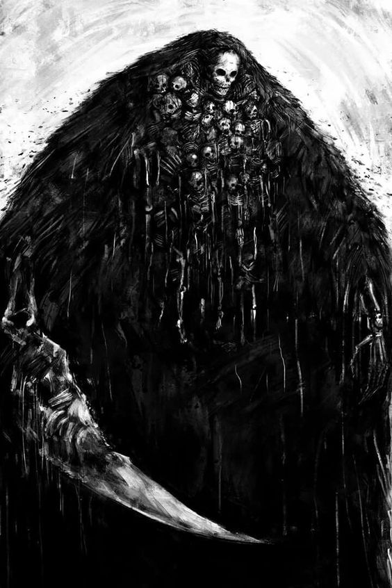
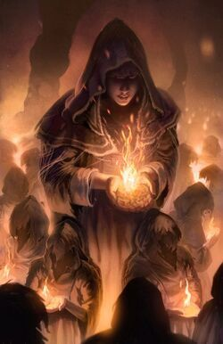
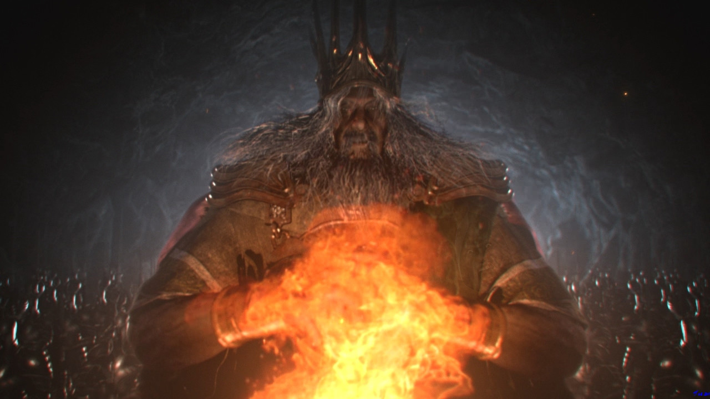

A História de Lordran
Dark Souls apresenta uma narrativa fragmentada, construída através de diálogos, descrições de itens, ambientes e simbolismos espalhados pelo mundo. O jogador reconstrói a história explorando as ruínas de Lordran.
Descubra os mistérios da Primeira Chama, dos Lord Souls e do eterno ciclo entre fogo e escuridão em Lordran.

Dark Souls apresenta uma narrativa fragmentada, construída através de diálogos, descrições de itens, ambientes e simbolismos espalhados pelo mundo. O jogador reconstrói a história explorando as ruínas de Lordran.
Antes da chama, o mundo era cinzento, envolto em névoa e dominado pelos dragões ancestrais. A aparição da Primeira Chama trouxe disparidade: calor e frio, luz e escuridão, vida e morte.


Senhor da Luz Solar e governante de Anor Londo.

O primeiro dos mortos e senhor da morte.

Criadora do Caos e mãe dos demônios.
Temendo o avanço da escuridão, Gwyn sacrificou sua própria alma para alimentar a Primeira Chama, prolongando artificialmente a Era do Fogo.

A chama representa ordem, poder e domínio dos deuses. Porém, toda chama eventualmente enfraquece, iniciando o inevitável ciclo de decadência.

Muitos acreditam que a Era das Trevas representa o verdadeiro tempo da humanidade, livre da influência dos deuses e da chama.